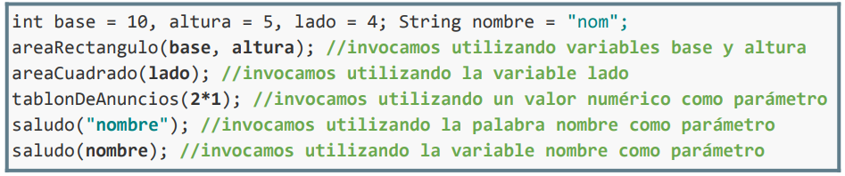
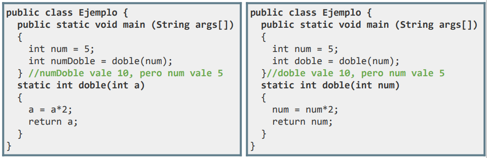

Los parámetros definidos en la cabecera de un método, al declararlo, se denominan parámetros formales (no tienen asociado un valor real).
Sintaxis:
tipo1 nomPar1, tipo2 nomPar2 … tipoN nomParN
Además, a través de sus identificadores, pueden usarse como variables en el cuerpo del método para realizar las operaciones necesarias. Será en el momento de al invocar a un método desde el programa principal cuando se le proporcionen los valores de los datos requeridos para ejecutar su código.

Los parámetros NO deben volver a declararse durante la ejecución del cuerpo del método.
Paso por valor en Java
Los parámetros de los métodos siempre se pasan por valor, es decir, pasamos una copia al método, la variable original nunca se modifica.
Esto hace a Java más sencillo y menos propenso a errores. Aunque por otro lado, la manipulación de punteros en lenguajes como C y C++ es útil en la programación de sistemas operativos, debido a que es un modelo que está más cerca de la máquina y permite la manipulación de la memoria de una forma mucho más avanzada.

Si al método le pasamos una variable como parámetro, al método le llega una copia del valor, y al modificar ese valor sobre el parámetro, no modificaremos el valor de la variable usada para invocar al método.